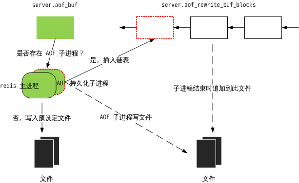

细说更新缓存
上面两次提到了「更新缓存」，它即是 redis 累积的数据变更。
更新缓存可以存储在 server.aof_buf 中，可以存储在 server.server.aof_rewrite_buf_blocks 连表中。他们的关系是：每一次数据变更记录都会写入 server.aof_buf 中，同时如果后台子进程在持久化，变更记录还会被写入 server.server.aof_rewrite_buf_blocks 中。server.aof_buf 会在特定时期写入指定文件，server.server.aof_rewrite_buf_blocks 会在后台持久化结束后追加到文件。
redis 源码中是这么实现的：propagrate()->feedAppendOnlyFile()->aofRewriteBufferAppend()
注意，feedAppendOnlyFile() 会把更新添加到 server.aof_buf；接下来会有一个判断，如果存在 AOF 子进程，则调用 aofRewriteBufferAppend() 将 server.aof_buf 中的所有数据插入到 server.aof_rewrite_buf_blocks 链表。这样，就能够理解为什么在 AOF 持久化子进程结束后，父进程会将 server.aof_rewrite_buf_blocks 追加到 AOF 文件了。
// 向 AOF 和从机发布数据更新
/* Propagate the specified command (in the context of the specified database id)
* to AOF and Slaves.
*
* flags are an xor between:
* + REDIS_PROPAGATE_NONE (no propagation of command at all)
* + REDIS_PROPAGATE_AOF (propagate into the AOF file if is enabled)
* + REDIS_PROPAGATE_REPL (propagate into the replication link)
*/
void propagate(struct redisCommand *cmd, int dbid, robj **argv, int argc,
int flags)
{
// AOF 策略需要打开，且设置 AOF 传播标记，将更新发布给本地文件
if (server.aof_state != REDIS_AOF_OFF && flags & REDIS_PROPAGATE_AOF)
feedAppendOnlyFile(cmd,dbid,argv,argc);
// 设置了从机传播标记，将更新发布给从机
if (flags & REDIS_PROPAGATE_REPL)
replicationFeedSlaves(server.slaves,dbid,argv,argc);
}
// 将数据更新记录到 AOF 缓存中
void feedAppendOnlyFile(struct redisCommand *cmd, int dictid, robj **argv,
int argc) {
sds buf = sdsempty();
robj *tmpargv[3];
/* The DB this command was targeting is not the same as the last command
* we appendend. To issue a SELECT command is needed. */
if (dictid != server.aof_selected_db) {
char seldb[64];
snprintf(seldb,sizeof(seldb),"%d",dictid);
buf = sdscatprintf(buf,"*2\r\n$6\r\nSELECT\r\n$%lu\r\n%s\r\n",
(unsigned long)strlen(seldb),seldb);
server.aof_selected_db = dictid;
}
if (cmd->proc == expireCommand || cmd->proc == pexpireCommand ||
cmd->proc == expireatCommand) {
/* Translate EXPIRE/PEXPIRE/EXPIREAT into PEXPIREAT */
buf = catAppendOnlyExpireAtCommand(buf,cmd,argv[1],argv[2]);
} else if (cmd->proc == setexCommand || cmd->proc == psetexCommand) {
/* Translate SETEX/PSETEX to SET and PEXPIREAT */
tmpargv[0] = createStringObject("SET",3);
tmpargv[1] = argv[1];
tmpargv[2] = argv[3];
buf = catAppendOnlyGenericCommand(buf,3,tmpargv);
decrRefCount(tmpargv[0]);
buf = catAppendOnlyExpireAtCommand(buf,cmd,argv[1],argv[2]);
} else {
/* All the other commands don't need translation or need the
* same translation already operated in the command vector
* for the replication itself. */
buf = catAppendOnlyGenericCommand(buf,argc,argv);
}
// 将生成的 AOF 追加到 server.aof_buf 中。server.在下一次进入事件循环之前，
// aof_buf 中的内容将会写到磁盘上
/* Append to the AOF buffer. This will be flushed on disk just before
* of re-entering the event loop, so before the client will get a
* positive reply about the operation performed. */
if (server.aof_state == REDIS_AOF_ON)
server.aof_buf = sdscatlen(server.aof_buf,buf,sdslen(buf));
// 如果已经有 AOF 子进程运行，redis 采取的策略是累积子进程 AOF 备份的数据和
// 内存中数据集的差异。 aofRewriteBufferAppend() 把 buf 的内容追加到
// server.aof_rewrite_buf_blocks 数组中
/* If a background append only file rewriting is in progress we want to
* accumulate the differences between the child DB and the current one
* in a buffer, so that when the child process will do its work we
* can append the differences to the new append only file. */
if (server.aof_child_pid != -1)
aofRewriteBufferAppend((unsigned char*)buf,sdslen(buf));
sdsfree(buf);
}
// 将数据更新记录写入 server.aof_rewrite_buf_blocks，此函数只由
// feedAppendOnlyFile() 调用
/* Append data to the AOF rewrite buffer, allocating new blocks if needed. */
void aofRewriteBufferAppend(unsigned char *s, unsigned long len) {
// 尾插法
listNode *ln = listLast(server.aof_rewrite_buf_blocks);
aofrwblock *block = ln ? ln->value : NULL;
while(len) {
/* If we already got at least an allocated block, try appending
* at least some piece into it. */
if (block) {
unsigned long thislen = (block->free < len) ? block->free : len;
if (thislen) { /* The current block is not already full. */
memcpy(block->buf+block->used, s, thislen);
block->used += thislen;
block->free -= thislen;
s += thislen;
len -= thislen;
}
}
if (len) { /* First block to allocate, or need another block. */
int numblocks;
// 创建新的节点，插到尾部
block = zmalloc(sizeof(*block));
block->free = AOF_RW_BUF_BLOCK_SIZE;
block->used = 0;
// 尾插法
listAddNodeTail(server.aof_rewrite_buf_blocks,block);
/* Log every time we cross more 10 or 100 blocks, respectively
* as a notice or warning. */
numblocks = listLength(server.aof_rewrite_buf_blocks);
if (((numblocks+1) % 10) == 0) {
int level = ((numblocks+1) % 100) == 0 ? REDIS_WARNING :
REDIS_NOTICE;
redisLog(level,"Background AOF buffer size: %lu MB",
aofRewriteBufferSize()/(1024*1024));
}
}
}
}
一副可以缓解视力疲劳的图片——AOF 持久化运作机制：

两种数据落地的方式，就是 AOF 的两个主线。因此，redis AOF 持久化机制有两条主线：后台执行和边服务边备份，抓住这两点就能理解 redis AOF 了。
这里有一个疑问，两条主线都会涉及文件的写：后台执行会写一个 AOF 文件，边服务边备份也会写一个，以哪个为准？
后台持久化的数据首先会被写入“temp-rewriteaof-bg-\%d.aof”，其中“\%d”是 AOF 子进程 id；待 AOF 子进程结束后，“temp-rewriteaof-bg-\%d.aof”会被以追加的方式打开，继而写入 server.aof_rewrite_buf_blocks 中的更新缓存，最后“temp-rewriteaof-bg-\%d.aof”文件被命名为 server.aof_filename，所以之前的名为 server.aof_filename 的文件会被删除，也就是说边服务边备份写入的文件会被删除。边服务边备份的数据会被一直写入到 server.aof_filename 文件中。
因此，确实会产生两个文件，但是最后都会变成 server.aof_filename 文件。
这里可能还有一个疑问，既然有了后台持久化，为什么还要边服务边备份？边服务边备份时间长了会产生数据冗余甚至备份过旧的数据，而后台持久化可以消除这些东西。看，这里是 redis 的双保险。